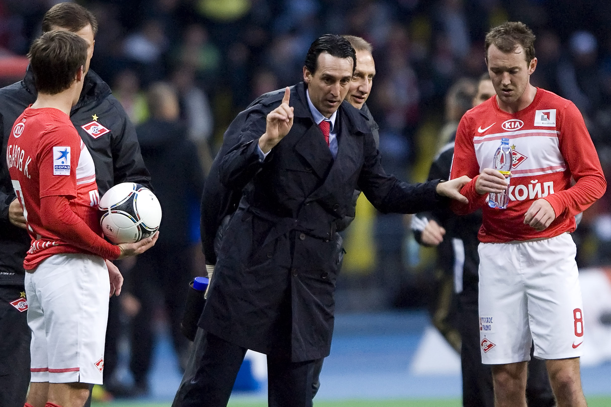
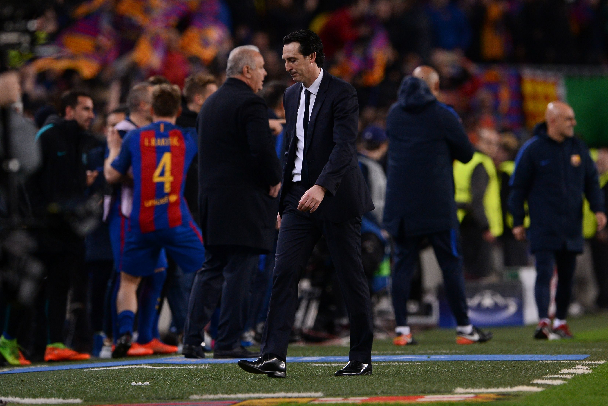

Annexed off Arsenal’s home dressing room, through a small hallway past the gargantuan television screen fully equipped with all the modern technology a manager could dream of to add any number of arrows and circles to a video presentation, is Unai Emery’s match-day office.
Inside there are three sofas and a couple of armchairs in various shades of orange or browny red (not Arsenal red), a dining area, a smaller TV for watching matches or studying any vital analysis, and a compact library of bound matchday programmes from the past few years. It is a utilitarian space. A few pictures on the wall all pre-date Emery’s time and depict successful teams of the Arsene Wenger era together with some stadium shots. In the corner of the room is a beer fridge with a plastic model of an Emirates plane perched precariously on top.
The big flip-chart catches the eye as the sole window into Emery’s work. Hand scrawled, with Arsenal in red pen and the opposition in blue, is his line-up and tactical strategies. It looks a little bit like an energetic brainstorm session, the way his players’ names are circled and linked together to their neighbour on the pitch by lines. The scrawl looks rushed, spelt out in a random mixture of upper and lower case letters. Up in the top right-hand corner of the sheet are the tactical options for the day. Four different set-ups for one match. There are two main underlined formations and two extra variations in brackets.

For a successful team, this might signify excellence of preparation and commendable flexibility within the squad to switch around as and when it is needed. But for a team looking as muddled as Arsenal have been lately, it looks like a blueprint for confusion.
Emery beat another seven interviewees to the Arsenal job, and did so by demonstrating an impressive knowledge of the squad, and a bold vision for the team’s future. However, it is not a vision that he has been able to realise.
At his unveiling, then chief executive Ivan Gazidis said: “I have followed Unai’s career very closely since his days at Valencia and he has always been on my radar screen. He has a fantastic record of success wherever he has gone and interestingly one of the noteworthy things about Unai’s teams is that they improve over time.”
Not this team. By almost every measure, Emery’s Arsenal are worse than they were last season.
Emery endured most of their latest blow, inflicted at Leicester by a team that performs with an overall slickness and collective purpose that leaves them well in the shade, motionless in the rain. Inspiration remains in short supply. Outshot as usual. Goals conceded as usual. Arsenal have now won just six of their last 16 games in all competitions. Three of those victories came in the Europa League, one against Championship opposition in the Carabao Cup. The only two Premier League victories in that dreadful run were slim home wins over Bournemouth and Aston Villa.
The optimistic mood engendered by a summer of spending has evaporated. It seems nobody within the Arsenal hierarchy saw this coming. Perhaps they should have: look back over Emery’s time in Spain, Russia and France, and there were signs he might prove an awkward fit at Arsenal. Perhaps, despite his claims, Gazidis did not follow Emery’s career quite closely enough.
The stark expressions on the faces of the men in the directors box, particularly the current decision makers Edu and Raul Sanllehi, suggests they cannot keep putting off a rethink even if the party line remains supportive of a head coach whose work is repeatedly exposed. “You’re getting sacked in the morning,” got an airing from the Leicester fans and began to move its way across the crowd.
Spain
“We are totally disgusted at what we perceive to be a lack of commitment, courage and especially dignity when defending the shirt of our team,” the supporters’ letter began. It went on to lament a lack of identity, stating that coach Unai Emery had “little credit” and that fans “do not understand” statements made by team representatives, and crucially that they “do not come close to the reality that we see on the field”. The address ended with the declaration that “we are not going to tolerate those attitudes, or tolerate them toying with our idea of what it is to support our club”.
This is not, it’s necessary to point out, a statement from Arsenal fans in 2019. It was made by the Association of Valencia Supporters Clubs, eight years ago, during Emery’s final season at Valencia.
For this is not the first time the coach has found himself embattled. When the Valencia fans penned their open letter to Emery, it was towards the end of October 2011. Ultimately, he held on until the end of the season. Right now, it feels as though it would require a fairly dramatic turnaround in form for him to survive that long at Arsenal.
When Arsenal appointed Emery, it was his record in Spanish football that made him most attractive. Despite his problems in Russia and France, he had been successful on home soil. There is just cause, too. His achievements are undeniably impressive: a first-ever promotion for Almeria, three consecutive third-place finishes with Valencia, and three consecutive Europa League triumphs with Sevilla.
However, with the benefit of hindsight there were still some causes for alarm. At Almeria, one unnamed player complained: “Emery is a colossal ‘pesado’ (pain in the arse). The players hate him. Training sessions are long and unbelievably boring. Team-talks go on forever — he makes you watch videos for hours, with endless replays of corners and free-kicks, even goal kicks. It’s so dull I’ve seen people fall asleep.
“He tells you the same things every week, like you’re a little kid, ramming home his point — like the one about an open hand only delivering a slap but a fist, with everyone tightly packed together, being capable of doing real damage.”
Crucially, however, Emery delivered success. “You watch videos for hours and hours and think it’s a load of bollocks… but it works. It’s so relentless that in the end every single player knows exactly what he wants.”
Emery has adapted his style significantly since then: the video sessions have been cut down, the instructions abbreviated. However, it’s an interesting insight into how his methods might begin to wear on a squad — especially once results dry up.
At Valencia, Emery encountered a new problem: expectations. The club’s fans are not well-known for their patience, and Emery’s failure to deliver silverware in this period certainly counted against him. His decision to release a book in March 2012 entitled “Winning Mentality: The Emery Method” before he’d actually lifted a trophy invited a certain degree of scorn.
When a club has a fractured, fractious fan base, it sometimes requires a good communicator to bring them on board. Look, for example, at the manner in which Jurgen Klopp has respun the narrative around Liverpool. Emery has never really had that capacity for rhetoric. On the sidelines he can be every bit as emotional as Klopp, but language is not his strong suit.
Alex Kirkland is now a Spanish football correspondent for ESPN but, during Emery’s time in Spain, he was working as a translator. He told The Athletic: “I was working for a client where we’d watch all the Spanish press conferences, translate them and pick out the best bits. My colleague and I used to divide between us who would do which press conference, and it became a running joke between us about who would have to do Emery’s press conference because he would just go on and on and on. It’s not that it didn’t make sense, but it just wasn’t very interesting. There was always a fair bit of jargon, a few cliches and buzzwords… but not really going anywhere. In person he can be more engaging, but that definitely doesn’t come across in a press conference context.”
When Emery first arrived at Arsenal, most were generous enough to assume something was being lost in translation. However, as his English has improved, he’s become no easier to understand. A press conference is an opportunity to address the media, but it’s also the most direct means of communicating with supporters. It’s a chance to win the hearts and minds of fans — a chance that Emery seems incapable of taking.
The Valencia team’s style of play became an issue too. The club’s fans admire expansive attacking football, and Emery’s more cautious approach did not curry favour. During that final season, Sid Lowe of The Guardian wrote: “Emery’s conservatism has not helped: especially not when it has cost them games — watching a lead slip is infuriatingly familiar. A 2-2 draw from 2-0 down delights; a 2-2 draw from 2-0 up does the opposite… Recent performances have been depressingly anaemic, ploddingly defensive. Sometimes supporters just want their team to let loose; Valencia rarely do.”
That was in March 2012. More than seven years on, Lowe’s theme will feel strikingly familiar to supporters in north London. Before that expected defeat at Leicester City, the Arsenal team had failed to win their previous four matches despite having led in each of them.
After his Soviet sojourn, Sevilla provided some welcome respite for Emery. Winning three Europa League trophies consecutively is a unique and noteworthy achievement. Emery is a good cup manager — after all, he did lead Arsenal into the Europa League final last season, albeit only to be thrashed 4-1 by Chelsea. For the most part, knockout competition seems to suit his highly tailored, focused planning.
However, it is the league that is usually the true measure of a team’s performance. Arsene Wenger won three FA Cups in four years between 2014 and 2017, but it didn’t stop the “Wenger Out” placards from being mounted.
Look beyond the cups, and Emery’s performance in La Liga does raise one or two issues that perhaps Arsenal might have taken more note of. His final season with Sevilla saw them fail to win a single match away from home. The only team with worse away results were Levante, who finished bottom and were relegated. Wenger’s final season in London saw Arsenal fail to win away from home between December and May, yet the club somehow managed to hire one of the few managers with a worse away record on their CV.
Last weekend, Arsenal were outshot by Wolves 25-10. It has become a regular feature with Emery’s Arsenal — and it has been a feature of other Emery teams. In his final season with Sevilla, no team in La Liga allowed more shots at goal (540). Emery’s tactical style seems to invite pressure. Nico Pareja, who played under Emery in Seville and Moscow, admitted: “He clearly prefers counter-attack to possession.” It’s a far cry from the “protagonist” approach Emery claimed he would implement at his Arsenal unveiling.
So much of the success that Emery did have at Sevilla was contingent on his relationship with Monchi, the technical director and talent-spotter. Arsenal were close to landing the Spaniard themselves earlier this year, but a last-minute change of heart saw him return to Seville. One wonders how different it might have been for Emery had he been reunited with Monchi as planned. Along with their close working relationship, he would also have a degree of loyalty to Emery. The man appointed in his stead, Edu, may not prove quite so forgiving.
Russia
Emery’s first excursion into management overseas came eight years into his coaching life. The destination was Spartak Moscow, one of Russia’s most historic clubs. Emery began trying to learn Russian before he arrived, which was unusual for foreign coaches. Most of them rely on translators from the get-go so the locals were quietly impressed by those early efforts.
It wasn’t long, however, before the cultural differences began to emerge and impact on how Emery was perceived. It was difficult to win over the dressing room. “From the very beginning people started to suspect he doesn’t care too much about discipline and he cares much more about tactics and showing videos to players. But in Russia discipline is extremely important,” explains Ivan Kalashnikov, a journalist with sports.ru. “It’s almost a genetic code from the Soviet times that all managers should be a strict disciplinarian and keep players alert at all times. Emery was the opposite to that. For some players, maybe the foreign ones in particular, this was okay. It was what they were used to. But for Russian players it could create a situation where they relaxed and began not to care about what Emery asked of them.”
The issue worsened after an episode where Spartak’s Brazilian contingent went for a night out before an important game. Photos emerged on social media. The match itself didn’t go well. “Emery didn’t even fine the players and the Russian players were unhappy with that,” Kalashnikov notes.
Then came the forgotten passport problems. Spartak’s director of football, Dimitri Popov, tells a story that reverberated through the squad. “One day, we were travelling for a championship game, and one of the players had forgotten his passport,” he recalled. “You need one in Russia even for internal flights. Because we were Spartak there wasn’t a problem, but Unai shouted at the player in front of the others: ‘Forgetting your passport means you aren’t thinking of the team. It’s a lack of respect towards your team-mates, blah, blah, blah!’
“Less than a week later, we were going to Benfica, which meant an international flight. And the only one who forgot his passport was Unai. The whole team had to wait three hours for him to get it so that we could leave. There was a difference between what he said and what he did, and so gradually the players lost their respect for him.”

Popov and Valeri Karpin, who held senior positions at the club, had both spent several years playing in Spain and therefore were, in theory, able to be conduits to ease Emery’s transition into Russian football.
Emery had in fact been Karpin’s suggestion to take over at Spartak but, when results and the atmosphere slipped into mediocrity, he was ready to take advantage and replace the Spaniard.
The axe fell, famously, in the dressing room in front of all the squad. After 17 games under Emery, Spartak had won nine, lost six and drawn two. “That balance of wins and losses is not good enough for Spartak Moscow,” assesses Kalashnikov. The final defeat was particularly damaging, a 5-1 loss in the derby at the hands of Dynamo Moscow, who were routinely the inferior team to Spartak.
In the post-match interviews Artem Dzyuba — now Russia’s captain — aired his frustration in public by answering a question with language that could only be interpreted as a shocking slight on Emery. “It was derogatory,” Kalashnikov says. “It is hard to translate directly but he referred to the coach in a very disrespectful manner. It is not allowed for a professional footballer to say something like that about his coach, obviously. Everyone saw he was not afraid to speak out like that. In that moment the manager was finished.”
At the time Dzyuba was not yet fully established as the star he would become but he was certainly regarded as a strong talent and a strong personality. It was not quite the same as the struggle to win over Neymar Jr or Mesut Ozil, but the difficulties connecting with an influential player showed even then.
“Emery was fired in the dressing room,” says Kalashnikov. “The owner came down and that was that. Emery seemed to just accept it. He wasn’t shocked. He wasn’t visibly upset. He didn’t argue against the decision.”
Aiden McGeady, trying to understand what on earth was going on with his own language barrier, had to seek confirmation from his English speaking team-mates to make sure he had actually witnessed the firing of the head coach in the dressing room.
France
If there was an occasional conservatism in Emery prior to his arrival at Paris Saint-Germain, the events of March 8, 2017, might just have seared it permanently into his identity. That was the night of La Remontada (The Comeback), when Emery’s side somehow surrendered a four-goal first-leg advantage from Paris to lose 6-1 at the Nou Camp and crash out of the Champions League round of 16.
The significance of that evening is probably underplayed in Emery’s story. A match like that changes people. It leaves a scar. If it could make a brave coach cautious, what might it do to a manager already prone to prudence?
There is fear in the way Emery’s Arsenal teams frequently play. It is a fear of humiliation; one potentially born on that night in the Nou Camp. Emery boasts of making Arsenal more “competitive”, but the price is an inherent cautiousness. Wenger’s teams were more frequently thrashed, but opening up was a gamble the Frenchman had the conviction to take. Emery coaches as if the wounds of that Barcelona night are still raw.
The Nou Camp was the nadir of two tricky years in Paris. In the first, he compounded the nightmare of La Remontada by losing a one-horse race for Ligue 1 to Monaco. His second season might have ended in a domestic treble, but the achievement was undermined by the club’s enormous expenditure and a failure to make significant progress in Europe. Upon appointment, Emery’s record showed him to be an excellent second-tier manager, and he did little to suggest he had evolved beyond that.
When Emery arrived in Paris, he sought to implement a 4-2-3-1 system, with Javier Pastore playing as a No 10, rather than the 4-3-3 that had been used under Laurent Blanc. In pre-season, the players were largely open to the change. However, once the squad’s international contingent returned from post-tournament holidays, problems began to arise. Dressing-room pressure eventually led to Emery reverting to the 4-3-3.
Tactically, Emery was handcuffed by his own squad. Speaking just after Emery’s appointment at Arsenal, ESPN’s France correspondent Jonathan Johnson said: “Emery sees himself as a football philosopher, who has been unable to truly express himself tactically over the past few years, which should mean that he experiments a lot more with the Gunners than he ever did with PSG.”
So it has proved. Emery has let out his frustration on the Arsenal tactics board, churning out formation after formation. On his Twitter profile, the header image depicts Emery holding a football in front of a blackboard marked with various scientific equations. After Le Professeur, The Scientist. If Wenger’s Arsenal occasionally felt like some utopian experiment, Emery’s Arsenal has become a research project. Results: inconclusive.
His biggest problems in Paris were interpersonal. It’s there we find the seeds of his fall-out with Mesut Ozil, principally in his awkward relationship with Neymar. Dealing with the Brazilian is often cited as a unique situation, and there’s a certain degree of truth to that. Most coaches will never encounter a star on that scale. However, Neymar is not the only PSG player that Emery irritated or ostracised. He failed to form a positive relationship with captain Thiago Silva, who was crucially the most influential member of the squad’s sizeable South American clique. Angel Di Maria was phased out of the team, while personal issues with Hatem Ben Arfa led to the player being sidelined and ultimately ignored, despite impressive performances in training.
Emery was personally involved in the pursuit of Grzegorz Krychowiak, but then barely selected him. It’s reminiscent of Arsenal’s doomed deal for Denis Suarez. In the six weeks leading up to Suarez’s signing, Emery and Raul Sanllehi would alternate calling the player several times a week to stress their desire to see him in London. When Suarez eventually joined on loan towards the end of the January transfer window, he was disappointed to discover he didn’t appear to be a major part of Emery’s plans. Krychowiak was so furious he publicly branded Emery “a liar”. Suarez, until now, has been more circumspect.

It was Neymar’s insouciance, however, that had the greatest impact upon the coach. There are certain similarities to the players that clash most with Emery: they typically demand a different, more individual approach. In these instances, the old cliche of players needing an ‘arm around the shoulder’ rings true. Knowing which individuals to indulge is part of management. Emery was doggedly determined to treat everyone the same, but in doing so he alienated some of his most gifted players. It’s odd that a coach who’s obsessive about tailoring his approach to different opponents should be so reluctant to do the same for individual squad members.
Emery was clearly burned by the experience of having one squad member exert such a strong influence on the group. Shortly after he left Paris Saint-Germain, Emery gave an interview to Spanish sportswriter Marti Perarnau. In a translation by Sergio Valenzuela on 7amkickoff.com, Emery explained: “Look, one of the best things Guardiola has at Manchester City is that he doesn’t have a star to be subordinated to. He has great players that when he needs them, in the moment of truth they all go to one [person]. And they do it because Guardiola earns it and gets the union. And when he has had to make radical decisions, Pep has made them, like dropping Deco and Ronaldinho, or letting Ibrahimovic go when he had issues with Messi. And by doing it, he avoided serious trouble.”
Emery watched the manner in which Guardiola had shackled Sergio Aguero and others with admiration. He found something inspirational in Guardiola’s iconoclasm, and dropped both Ozil and Aaron Ramsey in his first few months as Arsenal manager. Either the stars would bend to his will, or they would have to go.
Of course, he couldn’t stick to his stance. When desperation sets in, Ozil invariably comes back into the team. That kind of volte-face won’t have been anything new for PSG fans. On that fateful night in Barcelona, Emery surprisingly chose to bring in Thiago Silva ahead of the in-form youngster Presnel Kimpembe. Kimpembe and Marquinhos had kept a clean sheet in the first leg, but Emery ultimately acceded to squad pressure to select the more experienced man. Despite a lack of match practise, the Brazilian skipper was picked — and Emery paid the price with a result so disastrous it came to define his time in France.
Perhaps it says something about his standing in European football that at the end of his time in Paris, he was widely expected to take over at Real Sociedad. Emery’s representatives were reported to have held talks with Jokin Aperribay, Sociedad’s president and a personal friend of the coach. Emery’s contract in France was not being renewed, and a move back to the Basque country held a certain appeal. And then, Arsenal and Gazidis came calling. But, of course, they knew all this… didn’t they?
(Photo by Naomi Baker via Getty Images)